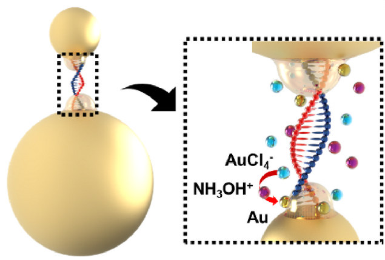

Research
WET LAB
Plasmonic Biosensing — 플라즈모닉 나노소재와 SERS(표면증강 라만 산란) 기반 초고감도 바이오센서 개발
- 극미량 질병 바이오마커의 고감도 검출 가능Plasmonic Biosensing — Ultrasensitive biosensors based on plasmonic nanomaterials and surface-enhanced Raman scattering (SERS)
- Highly sensitive detection of trace disease biomarkers
Nanoparticle Synthesis
금·은 등 귀금속 나노입자의 크기, 모양, 조성, 입자 간 간격 설계 및 합성
- 라만 신호를 크게 증폭하는 플라즈모닉 나노구조 구현Design and synthesis of noble-metal nanoparticles such as gold and silver, with control of size, shape, composition and interparticle gaps
- Plasmonic nanostructures that strongly amplify Raman signals


SERS Substrate Fabrication
미세·나노 가공 기술을 이용한 SERS 기판 설계 및 제작
- 강하고 균일하며 재현성 높은 신호, 시료와 측정 환경에 맞춘 최적화 가능Design and fabrication of SERS substrates by micro- and nanofabrication
- Strong, uniform and reproducible signals, optimized for each sample and measurement setting

SERS Measurement
다양한 임상 시료 속 바이오마커의 SERS 측정 및 신호 정량
- 높은 민감도와 재현성의 정량 분석 가능SERS measurement and signal quantification of biomarkers in diverse clinical samples
- Quantitative analysis with high sensitivity and reproducibility

DRY LAB
SERS 데이터를 비롯한 분자 데이터와 임상 데이터의 AI 분석
- 질병 진단 및 예측에 활용AI analysis of molecular data, including SERS data, and clinical data
- Applied to disease diagnosis and prediction
AI Clinical Analysis
분자 데이터와 임상 데이터의 전처리 및 머신러닝·딥러닝 모델 개발
- 질병 진단과 진행 예측, 판단 근거가 되는 특징 해석 가능Preprocessing of molecular and clinical data and development of machine learning and deep learning models
- Disease diagnosis, progression prediction and interpretation of the features behind each prediction


Raman Cross-modal
분자 데이터와 임상 데이터 등 서로 다른 모달리티의 통합 학습
- 두 데이터 사이의 관계 규명 및 새로운 진단 지표 개발 가능Joint learning of different modalities such as molecular and clinical data
- Uncovering how they relate and building new diagnostic indicators